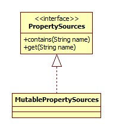
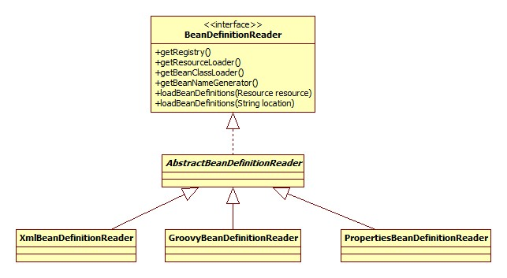
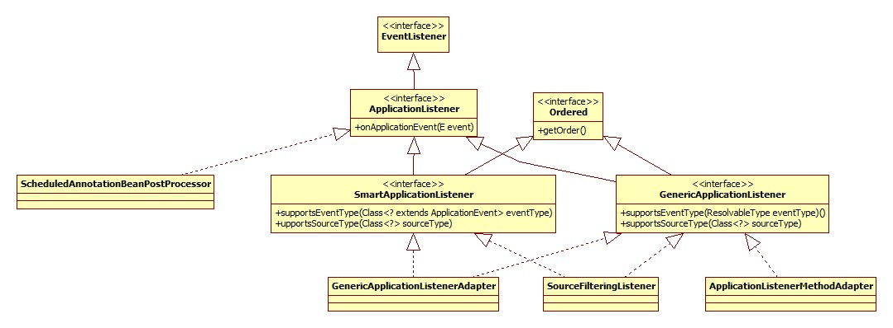

本文最后更新于：2023年8月9日 上午
基本 本部分从最基本的Spring开始。配置文件:
1 2 3 4 <?xml version="1.0" encoding="UTF-8" ?> <beans > <bean class ="base.SimpleBean" > </bean > </beans >
启动代码:
1 2 3 4 5 6 public static void main (String[] args) {ClassPathXmlApplicationContext context = new ClassPathXmlApplicationContext ("config.xml" );SimpleBean bean = context.getBean(SimpleBean.class);
SimpleBean:
1 2 3 4 5 public class SimpleBean {public void send () {"I am send method from SimpleBean!" );
ClassPathXmlApplicationContext 整个继承体系如下:
ResourceLoader代表了加载资源的一种方式，正是策略模式的实现 。
构造器源码:
1 2 3 4 5 6 7 8 9 public ClassPathXmlApplicationContext (String[] configLocations, boolean refresh, ApplicationContext parent) {super (parent);if (refresh) {
构造器 首先看父类构造器，沿着继承体系一直向上调用，直到AbstractApplicationContext:
1 2 3 4 5 6 7 public AbstractApplicationContext (ApplicationContext parent) {this ();public AbstractApplicationContext () {this .resourcePatternResolver = getResourcePatternResolver();
getResourcePatternResolver:
1 2 3 protected ResourcePatternResolver getResourcePatternResolver () {return new PathMatchingResourcePatternResolver (this );
PathMatchingResourcePatternResolver支持Ant风格的路径解析。
设置配置文件路径 即AbstractRefreshableConfigApplicationContext.setConfigLocations:
1 2 3 4 5 6 7 8 9 10 11 public void setConfigLocations (String... locations) {if (locations != null ) {"Config locations must not be null" );this .configLocations = new String [locations.length];for (int i = 0 ; i < locations.length; i++) {this .configLocations[i] = resolvePath(locations[i]).trim();else {this .configLocations = null ;
resolvePath:
1 2 3 protected String resolvePath (String path) {return getEnvironment().resolveRequiredPlaceholders(path);
此方法的目的在于将占位符(placeholder)解析成实际的地址。比如可以这么写: new ClassPathXmlApplicationContext("classpath:config.xml");那么classpath:就是需要被解析的。
getEnvironment方法来自于ConfigurableApplicationContext接口，源码很简单，如果为空就调用createEnvironment创建一个。AbstractApplicationContext.createEnvironment:
1 2 3 protected ConfigurableEnvironment createEnvironment () {return new StandardEnvironment ();
Environment接口 继承体系:
Environmen接口代表了当前应用所处的环境。 从此接口的方法可以看出，其主要和profile、Property相关。
Profile Spring Profile特性是从3.1开始的，其主要是为了解决这样一种问题: 线上环境和测试环境使用不同的配置或是数据库或是其它。有了Profile便可以在 不同环境之间无缝切换。Spring容器管理的所有bean都是和一个profile绑定在一起的。 使用了Profile的配置文件示例:
1 2 3 4 5 6 7 8 9 <beans profile ="develop" > <context:property-placeholder location ="classpath*:jdbc-develop.properties" /> </beans > <beans profile ="production" > <context:property-placeholder location ="classpath*:jdbc-production.properties" /> </beans > <beans profile ="test" > <context:property-placeholder location ="classpath*:jdbc-test.properties" /> </beans >
在启动代码中可以用如下代码设置活跃(当前使用的)Profile:
1 context.getEnvironment().setActiveProfiles("dev" );
当然使用的方式还有很多(比如注解)，参考:
spring3.1 profile 配置不同的环境
Spring Profiles example
Property 这里的Property指的是程序运行时的一些参数，引用注释:
properties files, JVM system properties, system environment variables, JNDI, servlet context parameters, ad-hoc Properties objects,Maps, and so on.
Environment构造器 1 2 3 4 private final MutablePropertySources propertySources = new MutablePropertySources (this .logger);public AbstractEnvironment () {this .propertySources);
PropertySources接口 继承体系:

此接口实际上是PropertySource的容器，默认的MutablePropertySources实现内部含有一个CopyOnWriteArrayList作为存储载体。
StandardEnvironment.customizePropertySources:
1 2 3 4 5 6 7 8 9 10 11 public static final String SYSTEM_ENVIRONMENT_PROPERTY_SOURCE_NAME = "systemEnvironment" ;public static final String SYSTEM_PROPERTIES_PROPERTY_SOURCE_NAME = "systemProperties" ;@Override protected void customizePropertySources (MutablePropertySources propertySources) {new MapPropertySource new SystemEnvironmentPropertySource
PropertySource接口 PropertySource接口代表了键值对的Property来源。继承体系：
AbstractEnvironment.getSystemProperties:
1 2 3 4 5 6 7 8 9 10 11 12 13 14 15 16 17 18 19 20 21 22 23 24 @Override public Map<String, Object> getSystemProperties () {try {return (Map) System.getProperties();catch (AccessControlException ex) {return (Map) new ReadOnlySystemAttributesMap () {@Override protected String getSystemAttribute (String attributeName) {try {return System.getProperty(attributeName);catch (AccessControlException ex) {if (logger.isInfoEnabled()) {"Caught AccessControlException when accessing system " +"property [%s]; its value will be returned [null]. Reason: %s" ,return null ;
这里的实现很有意思，如果安全管理器阻止获取全部的系统属性，那么会尝试获取单个属性的可能性，如果还不行就抛异常了。
getSystemEnvironment方法也是一个套路，不过最终调用的是System.getenv，可以获取jvm和OS的一些版本信息。
路径Placeholder处理 AbstractEnvironment.resolveRequiredPlaceholders:
1 2 3 4 5 @Override public String resolveRequiredPlaceholders (String text) throws IllegalArgumentException {return this .propertyResolver.resolveRequiredPlaceholders(text);
propertyResolver是一个PropertySourcesPropertyResolver对象:
1 2 private final ConfigurablePropertyResolver propertyResolver = new PropertySourcesPropertyResolver (this .propertySources);
PropertyResolver接口 PropertyResolver继承体系(排除Environment分支):
此接口正是用来解析PropertyResource。
解析 AbstractPropertyResolver.resolveRequiredPlaceholders:
1 2 3 4 5 6 7 @Override public String resolveRequiredPlaceholders (String text) throws IllegalArgumentException {if (this .strictHelper == null ) {this .strictHelper = createPlaceholderHelper(false );return doResolvePlaceholders(text, this .strictHelper);
1 2 3 4 5 private PropertyPlaceholderHelper createPlaceholderHelper (boolean ignoreUnresolvablePlaceholders) {return new PropertyPlaceholderHelper (this .placeholderPrefix, this .placeholderSuffix,this .valueSeparator, ignoreUnresolvablePlaceholders);
doResolvePlaceholders：
1 2 3 4 5 6 7 8 9 private String doResolvePlaceholders (String text, PropertyPlaceholderHelper helper) {return helper.replacePlaceholders(text, new PropertyPlaceholderHelper .PlaceholderResolver() {@Override public String resolvePlaceholder (String placeholderName) {return getPropertyAsRawString(placeholderName);
其实代码执行到这里的时候还没有进行xml配置文件的解析，那么这里的解析placeHolder是什么意思呢，原因在于可以这么写:
1 2 3 System.setProperty("spring" , "classpath" );ClassPathXmlApplicationContext context = new ClassPathXmlApplicationContext ("${spring}:config.xml" );SimpleBean bean = context.getBean(SimpleBean.class);
这样就可以正确解析。placeholder的替换其实就是字符串操作，这里只说一下正确的属性是怎么来的。实现的关键在于PropertySourcesPropertyResolver.getProperty:
1 2 3 4 5 6 7 8 9 10 11 12 13 @Override protected String getPropertyAsRawString (String key) {return getProperty(key, String.class, false );protected <T> T getProperty (String key, Class<T> targetValueType, boolean resolveNestedPlaceholders) {if (this .propertySources != null ) {for (PropertySource<?> propertySource : this .propertySources) {Object value = propertySource.getProperty(key);return value;return null ;
很明显了，就是从System.getProperty和System.getenv获取，但是由于环境变量是无法自定义的，所以其实此处只能通过System.setProperty指定。
注意，classpath:XXX这种写法的classpath前缀到目前为止还没有被处理。
refresh Spring bean解析就在此方法，所以单独提出来。
AbstractApplicationContext.refresh:
1 2 3 4 5 6 7 8 9 10 11 12 13 14 15 16 17 18 19 20 21 22 23 24 25 26 27 28 29 30 31 32 33 34 35 36 37 38 39 40 41 42 @Override public void refresh () throws BeansException, IllegalStateException {synchronized (this .startupShutdownMonitor) {ConfigurableListableBeanFactory beanFactory = obtainFreshBeanFactory();try {catch (BeansException ex) {throw ex;finally {
prepareRefresh 1 2 3 4 5 6 7 8 9 10 11 12 13 14 protected void prepareRefresh () {this .startupDate = System.currentTimeMillis();this .closed.set(false );this .active.set(true );this .earlyApplicationEvents = new LinkedHashSet <ApplicationEvent>();
属性校验 AbstractEnvironment.validateRequiredProperties:
1 2 3 4 @Override public void validateRequiredProperties () throws MissingRequiredPropertiesException {this .propertyResolver.validateRequiredProperties();
AbstractPropertyResolver.validateRequiredProperties:
1 2 3 4 5 6 7 8 9 10 11 12 @Override public void validateRequiredProperties () {MissingRequiredPropertiesException ex = new MissingRequiredPropertiesException ();for (String key : this .requiredProperties) {if (this .getProperty(key) == null ) {if (!ex.getMissingRequiredProperties().isEmpty()) {throw ex;
requiredProperties是通过setRequiredProperties方法设置的，保存在一个list里面，默认是空的，也就是不需要校验任何属性。
BeanFactory创建 由obtainFreshBeanFactory调用AbstractRefreshableApplicationContext.refreshBeanFactory:
1 2 3 4 5 6 7 8 9 10 11 12 13 14 15 16 @Override protected final void refreshBeanFactory () throws BeansException {if (hasBeanFactory()) {DefaultListableBeanFactory beanFactory = createBeanFactory();synchronized (this .beanFactoryMonitor) {this .beanFactory = beanFactory;
BeanFactory接口 此接口实际上就是Bean容器，其继承体系:
BeanFactory定制 AbstractRefreshableApplicationContext.customizeBeanFactory方法用于给子类提供一个自由配置的机会，默认实现:
1 2 3 4 5 6 7 8 9 10 protected void customizeBeanFactory (DefaultListableBeanFactory beanFactory) {if (this .allowBeanDefinitionOverriding != null ) {this .allowBeanDefinitionOverriding);if (this .allowCircularReferences != null ) {this .allowCircularReferences);
Bean加载 AbstractXmlApplicationContext.loadBeanDefinitions，这个便是核心的bean加载了:
1 2 3 4 5 6 7 8 9 10 11 12 13 14 15 @Override protected void loadBeanDefinitions (DefaultListableBeanFactory beanFactory) {XmlBeanDefinitionReader beanDefinitionReader = new XmlBeanDefinitionReader (beanFactory);this .getEnvironment());this );new ResourceEntityResolver (this ));
EntityResolver 此处只说明用到的部分继承体系:
EntityResolver接口在org.xml.sax中定义。DelegatingEntityResolver用于schema和dtd的解析。
BeanDefinitionReader 继承体系:

路径解析(Ant) 1 2 3 4 5 6 7 8 9 10 11 protected void loadBeanDefinitions (XmlBeanDefinitionReader reader) {if (configResources != null ) {if (configLocations != null ) {
AbstractBeanDefinitionReader.loadBeanDefinitions:
1 2 3 4 5 6 7 8 9 @Override public int loadBeanDefinitions (String... locations) throws BeanDefinitionStoreException {"Location array must not be null" );int counter = 0 ;for (String location : locations) {return counter;
之后调用:
1 2 3 4 5 6 7 8 9 10 11 12 13 14 15 16 17 18 19 20 21 22 23 24 25 26 27 28 29 30 31 public int loadBeanDefinitions (String location, Set<Resource> actualResources) {ResourceLoader resourceLoader = getResourceLoader();if (resourceLoader instanceof ResourcePatternResolver) {try {int loadCount = loadBeanDefinitions(resources);if (actualResources != null ) {for (Resource resource : resources) {return loadCount;catch (IOException ex) {throw new BeanDefinitionStoreException ("Could not resolve bean definition resource pattern [" + location + "]" , ex);else {Resource resource = resourceLoader.getResource(location);int loadCount = loadBeanDefinitions(resource);if (actualResources != null ) {return loadCount;
getResource的实现在AbstractApplicationContext：
1 2 3 4 5 @Override public Resource[] getResources(String locationPattern) throws IOException {return this .resourcePatternResolver.getResources(locationPattern);
PathMatchingResourcePatternResolver是ResourceLoader继承体系的一部分。
1 2 3 4 5 6 7 8 9 10 11 12 13 14 15 16 17 18 19 20 21 22 23 24 25 26 27 28 29 30 @Override public Resource[] getResources(String locationPattern) throws IOException {"Location pattern must not be null" );if (locationPattern.startsWith(CLASSPATH_ALL_URL_PREFIX)) {if (getPathMatcher().isPattern(locationPatternreturn findPathMatchingResources(locationPattern);else {return findAllClassPathResources(locationPatternelse {int prefixEnd = locationPattern.indexOf(":" ) + 1 ;if (getPathMatcher().isPattern(locationPattern.substring(prefixEnd))) {return findPathMatchingResources(locationPattern);else {return new Resource [] {getResourceLoader().getResource(locationPattern)};
isPattern:
1 2 3 4 @Override public boolean isPattern (String path) {return (path.indexOf('*' ) != -1 || path.indexOf('?' ) != -1 );
可以看出配置文件路径是支持ant风格的，也就是可以这么写:
1 new ClassPathXmlApplicationContext ("con*.xml" );
具体怎么解析ant风格的就不写了。
配置文件加载 入口方法在AbstractBeanDefinitionReader的217行:
1 2 3 4 int loadCount = loadBeanDefinitions(resources);
最终逐个调用XmlBeanDefinitionReader的loadBeanDefinitions方法:
1 2 3 4 @Override public int loadBeanDefinitions (Resource resource) {return loadBeanDefinitions(new EncodedResource (resource));
Resource是代表一种资源的接口，其类图:
EncodedResource扮演的其实是一个装饰器的模式，为InputStreamSource添加了字符编码(虽然默认为null)。这样为我们自定义xml配置文件的编码方式提供了机会。
之后关键的源码只有两行:
1 2 3 4 5 public int loadBeanDefinitions (EncodedResource encodedResource) throws BeanDefinitionStoreException {InputStream inputStream = encodedResource.getResource().getInputStream();InputSource inputSource = new InputSource (inputStream);return doLoadBeanDefinitions(inputSource, encodedResource.getResource());
InputSource是org.xml.sax的类。
doLoadBeanDefinitions：
1 2 3 4 protected int doLoadBeanDefinitions (InputSource inputSource, Resource resource) {Document doc = doLoadDocument(inputSource, resource);return registerBeanDefinitions(doc, resource);
doLoadDocument:
1 2 3 4 protected Document doLoadDocument (InputSource inputSource, Resource resource) {return this .documentLoader.loadDocument(inputSource, getEntityResolver(), this .errorHandler,
documentLoader是一个DefaultDocumentLoader对象，此类是DocumentLoader接口的唯一实现。getEntityResolver方法返回ResourceEntityResolver，上面说过了。errorHandler是一个SimpleSaxErrorHandler对象。
校验模型其实就是确定xml文件使用xsd方式还是dtd方式来校验，忘了的话左转度娘。Spring会通过读取xml文件的方式判断应该采用哪种。
NamespaceAware默认false，因为默认配置了校验为true。
DefaultDocumentLoader.loadDocument:
1 2 3 4 5 6 7 8 @Override public Document loadDocument (InputSource inputSource, EntityResolver entityResolver, ErrorHandler errorHandler, int validationMode, boolean namespaceAware) {DocumentBuilderFactory factory = createDocumentBuilderFactory(validationMode, namespaceAware);DocumentBuilder builder = createDocumentBuilder(factory, entityResolver, errorHandler);return builder.parse(inputSource);
createDocumentBuilderFactory比较有意思:
1 2 3 4 5 6 7 8 9 10 11 12 13 14 15 16 protected DocumentBuilderFactory createDocumentBuilderFactory (int validationMode, boolean namespaceAware{ DocumentBuilderFactory factory = DocumentBuilderFactory.newInstance() ;if (validationMode != XmlValidationModeDetector.VALIDATION_NONE) {true );if (validationMode == XmlValidationModeDetector.VALIDATION_XSD) {true );return factory;
Bean解析 XmlBeanDefinitionReader.registerBeanDefinitions:
1 2 3 4 5 6 public int registerBeanDefinitions (Document doc, Resource resource) {BeanDefinitionDocumentReader documentReader = createBeanDefinitionDocumentReader();int countBefore = getRegistry().getBeanDefinitionCount();return getRegistry().getBeanDefinitionCount() - countBefore;
createBeanDefinitionDocumentReader:
1 2 3 4 5 protected BeanDefinitionDocumentReader createBeanDefinitionDocumentReader () {return BeanDefinitionDocumentReader.class.castthis .documentReaderClass));
documentReaderClass默认是DefaultBeanDefinitionDocumentReader，这其实也是策略模式，通过setter方法可以更换其实现。
注意cast方法，代替了强转。
createReaderContext：
1 2 3 4 public XmlReaderContext createReaderContext (Resource resource) {return new XmlReaderContext (resource, this .problemReporter, this .eventListener,this .sourceExtractor, this , getNamespaceHandlerResolver());
problemReporter是一个FailFastProblemReporter对象。
eventListener是EmptyReaderEventListener对象，此类里的方法都是空实现。
sourceExtractor是NullSourceExtractor对象，直接返回空，也是空实现。
getNamespaceHandlerResolver默认返回DefaultNamespaceHandlerResolver对象，用来获取xsd对应的处理器。
XmlReaderContext的作用感觉就是这一堆参数的容器，糅合到一起传给DocumentReader，并美其名为Context。可以看出，Spring中到处都是策略模式，大量操作被抽象成接口。
DefaultBeanDefinitionDocumentReader.registerBeanDefinitions:
1 2 3 4 5 6 @Override public void registerBeanDefinitions (Document doc, XmlReaderContext readerContext) {this .readerContext = readerContext;Element root = doc.getDocumentElement();
doRegisterBeanDefinitions:
1 2 3 4 5 6 7 8 9 10 11 12 13 14 15 16 17 18 19 20 21 22 protected void doRegisterBeanDefinitions (Element root) {BeanDefinitionParserDelegate parent = this .delegate;this .delegate = createDelegate(getReaderContext(), root, parent);if (this .delegate.isDefaultNamespace(root)) {String profileSpec = root.getAttribute(PROFILE_ATTRIBUTE);if (StringUtils.hasText(profileSpec)) {if (!getReaderContext().getEnvironment().acceptsProfiles(specifiedProfiles)) {return ;this .delegate);this .delegate = parent;
delegate的作用在于处理beans标签的嵌套，其实Spring配置文件是可以写成这样的:
1 2 3 4 5 6 7 <?xml version="1.0" encoding="UTF-8" ?> <beans > <bean class ="base.SimpleBean" > </bean > <beans > <bean class ="java.lang.Object" > </bean > </beans > </beans >
xml(schema)的命名空间其实类似于java的报名，命名空间采用URL，比如Spring的是这样:
1 2 <?xml version="1.0" encoding="UTF-8" ?> <beans xmlns ="http://www.springframework.org/schema/beans" > </beans >
xmlns属性就是xml规范定义的用来设置命名空间的。这样设置了之后其实里面的bean元素全名就相当于http://www.springframework.org/schema/beans:bean，可以有效的防止命名冲突。命名空间可以通过规范定义的org.w3c.dom.Node.getNamespaceURI方法获得。
注意一下profile的检查, AbstractEnvironment.acceptsProfiles:
1 2 3 4 5 6 7 8 9 10 11 12 13 14 @Override public boolean acceptsProfiles (String... profiles) {"Must specify at least one profile" );for (String profile : profiles) {if (StringUtils.hasLength(profile) && profile.charAt(0 ) == '!' ) {if (!isProfileActive(profile.substring(1 ))) {return true ;else if (isProfileActive(profile)) {return true ;return false ;
原理很简单，注意从源码可以看出，profile属性支持!取反 。
preProcessXml方法是个空实现，供子类去覆盖，目的在于给子类一个把我们自定义的标签转为Spring标准标签的机会 , 想的真周到。
DefaultBeanDefinitionDocumentReader.parseBeanDefinitions：
1 2 3 4 5 6 7 8 9 10 11 12 13 14 15 16 17 18 protected void parseBeanDefinitions (Element root, BeanDefinitionParserDelegate delegate) {if (delegate.isDefaultNamespace(root)) {NodeList nl = root.getChildNodes();for (int i = 0 ; i < nl.getLength(); i++) {Node node = nl.item(i);if (node instanceof Element) {Element ele = (Element) node;if (delegate.isDefaultNamespace(ele)) {else {else {
可见，对于非默认命名空间的元素交由delegate处理。
默认命名空间解析 即import, alias, bean, 嵌套的beans四种元素。parseDefaultElement:
1 2 3 4 5 6 7 8 9 10 11 12 13 14 15 16 private void parseDefaultElement (Element ele, BeanDefinitionParserDelegate delegate) {if (delegate.nodeNameEquals(ele, IMPORT_ELEMENT)) {else if (delegate.nodeNameEquals(ele, ALIAS_ELEMENT)) {else if (delegate.nodeNameEquals(ele, BEAN_ELEMENT)) {else if (delegate.nodeNameEquals(ele, NESTED_BEANS_ELEMENT)) {
import 写法示例:
1 2 <import resource ="CTIContext.xml" /> <import resource ="customerContext.xml" />
importBeanDefinitionResource套路和之前的配置文件加载完全一样，不过注意被import进来的文件是先于当前文件 被解析的。
alias 假如有一个bean名为componentA-dataSource，但是另一个组件想以componentB-dataSource的名字使用，就可以这样定义:
1 <alias name ="componentA-dataSource" alias ="componentB-dataSource" />
processAliasRegistration核心源码:
1 2 3 4 5 6 protected void processAliasRegistration (Element ele) {String name = ele.getAttribute(NAME_ATTRIBUTE);String alias = ele.getAttribute(ALIAS_ATTRIBUTE);
从前面的源码可以发现，registry其实就是DefaultListableBeanFactory，它实现了BeanDefinitionRegistry接口。registerAlias方法的实现在SimpleAliasRegistry:
1 2 3 4 5 6 7 8 9 10 11 12 13 14 15 16 17 18 19 20 21 22 23 24 25 @Override public void registerAlias (String name, String alias) {"'name' must not be empty" );"'alias' must not be empty" );if (alias.equals(name)) {this .aliasMap.remove(alias);else {String registeredName = this .aliasMap.get(alias);if (registeredName != null ) {if (registeredName.equals(name)) {return ;if (!allowAliasOverriding()) {throw new IllegalStateException "Cannot register alias '" + alias + "' for name '" +"': It is already registered for name '" + registeredName + "'." );this .aliasMap.put(alias, name);
所以别名关系的保存使用Map完成，key为别名，value为本来的名字。
bean bean节点是Spring最最常见的节点了。
DefaultBeanDefinitionDocumentReader.processBeanDefinition:
1 2 3 4 5 6 7 8 9 10 11 12 13 14 15 16 17 protected void processBeanDefinition (Element ele, BeanDefinitionParserDelegate delegate) {BeanDefinitionHolder bdHolder = delegate.parseBeanDefinitionElement(ele);if (bdHolder != null ) {try {catch (BeanDefinitionStoreException ex) {"Failed to register bean definition with name '" +"'" , ele, ex);new BeanComponentDefinition (bdHolder));
id & name处理 最终调用BeanDefinitionParserDelegate.parseBeanDefinitionElement(Element ele, BeanDefinition containingBean)，源码较长，分部分说明。
首先获取到id和name属性，name属性支持配置多个，以逗号分隔，如果没有指定id，那么将以第一个name属性值代替。id必须是唯一的，name属性其实是alias的角色，可以和其它的bean重复，如果name也没有配置，那么其实什么也没做 。
1 2 3 4 5 6 7 8 9 10 11 12 13 14 15 16 17 18 19 20 String id = ele.getAttribute(ID_ATTRIBUTE);String nameAttr = ele.getAttribute(NAME_ATTRIBUTE);new ArrayList <String>();if (StringUtils.hasLength(nameAttr)) {String beanName = id;if (!StringUtils.hasText(beanName) && !aliases.isEmpty()) {0 );if (containingBean == null ) {
beanName生成 如果name和id属性都没有指定，那么Spring会自己生成一个, BeanDefinitionParserDelegate.parseBeanDefinitionElement:
1 2 3 beanName = this .readerContext.generateBeanName(beanDefinition);String beanClassName = beanDefinition.getBeanClassName();
可见，Spring同时会把类名作为其别名。
最终调用的是BeanDefinitionReaderUtils.generateBeanName:
1 2 3 4 5 6 7 8 9 10 11 12 13 14 15 16 17 18 19 20 21 22 23 24 25 26 27 28 public static String generateBeanName ( BeanDefinition definition, BeanDefinitionRegistry registry, boolean isInnerBean) {String generatedBeanName = definition.getBeanClassName();if (generatedBeanName == null ) {if (definition.getParentName() != null ) {"$child" ;else if (definition.getFactoryBeanName() != null ) {"$created" ;String id = generatedBeanName;if (isInnerBean) {else {int counter = -1 ;while (counter == -1 || registry.containsBeanDefinition(id)) {return id;
bean解析 还是分部分说明(parseBeanDefinitionElement)。
首先获取到bean的class属性和parent属性，配置了parent之后，当前bean会继承父bean的属性。之后根据class和parent创建BeanDefinition对象。
1 2 3 4 5 6 7 8 9 String className = null ;if (ele.hasAttribute(CLASS_ATTRIBUTE)) {String parent = null ;if (ele.hasAttribute(PARENT_ATTRIBUTE)) {AbstractBeanDefinition bd = createBeanDefinition(className, parent);
BeanDefinition的创建在BeanDefinitionReaderUtils.createBeanDefinition:
1 2 3 4 5 6 7 8 9 10 11 12 13 14 public static AbstractBeanDefinition createBeanDefinition ( String parentName, String className, ClassLoader classLoader) {GenericBeanDefinition bd = new GenericBeanDefinition ();if (className != null ) {if (classLoader != null ) {else {return bd;
之后是解析bean的其它属性，其实就是读取其配置，调用相应的setter方法保存在BeanDefinition中:
1 parseBeanDefinitionAttributes(ele, beanName, containingBean, bd);
之后解析bean的decription子元素:
1 2 3 <bean id ="b" name ="one, two" class ="base.SimpleBean" > <description > SimpleBean</description > </bean >
就仅仅是个描述。
然后是meta子元素的解析，meta元素在xml配置文件里是这样的:
1 2 3 <bean id ="b" name ="one, two" class ="base.SimpleBean" > <meta key ="name" value ="skywalker" /> </bean >
注释上说，这样可以将任意的元数据附到对应的bean definition上。解析过程源码:
1 2 3 4 5 6 7 8 9 10 11 12 13 14 15 16 public void parseMetaElements (Element ele, BeanMetadataAttributeAccessor attributeAccessor) {NodeList nl = ele.getChildNodes();for (int i = 0 ; i < nl.getLength(); i++) {Node node = nl.item(i);if (isCandidateElement(node) && nodeNameEquals(node, META_ELEMENT)) {Element metaElement = (Element) node;String key = metaElement.getAttribute(KEY_ATTRIBUTE);String value = metaElement.getAttribute(VALUE_ATTRIBUTE);BeanMetadataAttribute attribute = new BeanMetadataAttribute (key, value);
AbstractBeanDefinition继承自BeanMetadataAttributeAccessor类，底层使用了一个LinkedHashMap保存metadata。这个metadata具体是做什么暂时还不知道。
lookup-method解析：
此标签的作用在于当一个bean的某个方法被设置为lookup-method后，每次调用此方法时，都会返回一个新的指定bean的对象 。用法示例:
1 2 3 4 5 <bean id ="apple" class ="cn.com.willchen.test.di.Apple" scope ="prototype" /> <bean id ="fruitPlate" class ="cn.com.willchen.test.di.FruitPlate" > <lookup-method name ="getFruit" bean ="apple" /> </bean >
数据保存在Set中，对应的类是MethodOverrides。可以参考:
Spring - lookup-method方式实现依赖注入
replace-mothod解析:
此标签用于替换bean里面的特定的方法实现，替换者必须实现Spring的MethodReplacer接口，有点像aop的意思。
配置文件示例:
1 2 3 4 5 6 <bean name ="replacer" class ="springroad.deomo.chap4.MethodReplace" /> <bean name ="testBean" class ="springroad.deomo.chap4.LookupMethodBean" > <replaced-method name ="test" replacer ="replacer" > <arg-type match ="String" /> </replaced-method > </bean >
arg-type的作用是指定替换方法的参数类型，因为接口的定义参数都是Object的。参考: SPRING.NET 1.3.2 学习20–方法注入之替换方法注入
解析之后将数据放在ReplaceOverride对象中，里面有一个LinkedList专门用于保存arg-type。
构造参数(constructor-arg)解析:
作用一目了然，使用示例:
1 2 3 4 5 <bean class ="base.SimpleBean" > <constructor-arg > <value type ="java.lang.String" > Cat</value > </constructor-arg > </bean >
type一般不需要指定，除了泛型集合那种。除此之外，constructor-arg还支持name, index, ref等属性，可以具体的指定参数的位置等。构造参数解析后保存在BeanDefinition内部一个ConstructorArgumentValues对象中。如果设置了index属性，那么以Map<Integer, ValueHolder>的形式保存，反之，以List的形式保存。
property解析:
非常常用的标签，用以为bean的属性赋值，支持value和ref两种形式，示例:
1 2 3 <bean class ="base.SimpleBean" > <property name ="name" value ="skywalker" /> </bean >
value和ref属性不能同时出现，如果是ref，那么将其值保存在不可变的RuntimeBeanReference对象中，其实现了BeanReference接口，此接口只有一个getBeanName方法。如果是value，那么将其值保存在TypedStringValue对象中。最终将对象保存在BeanDefinition内部一个MutablePropertyValues对象中(内部以ArrayList实现)。
qualifier解析:
配置示例:
1 2 3 4 5 6 7 8 9 10 11 <bean class ="base.Student" > <property name ="name" value ="skywalker" > </property > <property name ="age" value ="12" > </property > <qualifier type ="org.springframework.beans.factory.annotation.Qualifier" value ="student" /> </bean > <bean class ="base.Student" > <property name ="name" value ="seaswalker" > </property > <property name ="age" value ="15" > </property > <qualifier value ="student_2" > </qualifier > </bean > <bean class ="base.SimpleBean" />
SimpleBean部分源码:
1 2 3 @Autowired @Qualifier("student") private Student student;
此标签和@Qualifier, @Autowired两个注解一起使用才有作用。@Autowired注解采用按类型查找的方式进行注入，如果找到多个需要类型的bean便会报错，有了@Qualifier标签就可以再按照此注解指定的名称查找。两者结合相当于实现了按类型+名称注入。type属性可以不指定，因为默认就是那个。qualifier标签可以有attribute子元素，比如:
1 2 3 <qualifier type ="org.springframework.beans.factory.annotation.Qualifier" value ="student" > <attribute key ="id" value ="1" /> </qualifier >
貌似是用来在qualifier也区分不开的时候使用。attribute键值对保存在BeanMetadataAttribute对象中。整个qualifier保存在AutowireCandidateQualifier对象中。
Bean装饰 这部分是针对其它schema的属性以及子节点，比如:
1 2 3 <bean class ="base.Student" primary ="true" > <context:property-override /> </bean >
没见过这种用法，留个坑。
Bean注册 BeanDefinitionReaderUtils.registerBeanDefinition:
1 2 3 4 5 6 7 8 9 10 11 12 13 public static void registerBeanDefinition ( BeanDefinitionHolder definitionHolder, BeanDefinitionRegistry registry) {String beanName = definitionHolder.getBeanName();if (aliases != null ) {for (String alias : aliases) {
registry其实就是DefaultListableBeanFactory对象，registerBeanDefinition方法主要就干了这么两件事:
1 2 3 4 5 @Override public void registerBeanDefinition (String beanName, BeanDefinition beanDefinition) {this .beanDefinitionMap.put(beanName, beanDefinition);this .beanDefinitionNames.add(beanName);
一个是Map，另一个是List，一目了然。registerAlias方法的实现在其父类SimpleAliasRegistry，就是把键值对放在了一个ConcurrentHashMap里。
ComponentRegistered事件触发:
默认是个空实现，前面说过了。
BeanDefiniton数据结构 BeanDefiniton数据结构如下图:
beans beans元素的嵌套直接递归调用DefaultBeanDefinitionDocumentReader.parseBeanDefinitions。
其它命名空间解析 入口在DefaultBeanDefinitionDocumentReader.parseBeanDefinitions->BeanDefinitionParserDelegate.parseCustomElement(第二个参数为空):
1 2 3 4 5 public BeanDefinition parseCustomElement (Element ele, BeanDefinition containingBd) {String namespaceUri = getNamespaceURI(ele);NamespaceHandler handler = this .readerContext.getNamespaceHandlerResolver().resolve(namespaceUri);return handler.parse(ele, new ParserContext (this .readerContext, this , containingBd));
NamespaceHandlerResolver由XmlBeanDefinitionReader初始化，是一个DefaultNamespaceHandlerResolver对象，也是NamespaceHandlerResolver接口的唯一实现。
其resolve方法:
1 2 3 4 5 6 7 8 9 10 11 12 13 14 15 16 17 @Override public NamespaceHandler resolve (String namespaceUri) {Object handlerOrClassName = handlerMappings.get(namespaceUri);if (handlerOrClassName == null ) {return null ;else if (handlerOrClassName instanceof NamespaceHandler) {return (NamespaceHandler) handlerOrClassName;else {String className = (String) handlerOrClassName;this .classLoader);NamespaceHandler namespaceHandler = (NamespaceHandler) BeanUtils.instantiateClass(handlerClass);return namespaceHandler;
容易看出，Spring其实使用了一个Map了保存其映射关系，key就是命名空间的uri，value是NamespaceHandler对象或是Class完整名，如果发现是类名，那么用反射的方法进行初始化，如果是NamespaceHandler对象，那么直接返回 。
NamespaceHandler映射关系来自于各个Spring jar包下的META-INF/spring.handlers文件，以spring-context包为例:
1 2 3 4 5 http\://www.springframework.org/schema/context=org.springframework.context.config.ContextNamespaceHandler
NamespaceHandler继承体系
init resolve中调用了其init方法，此方法用以向NamespaceHandler对象注册BeanDefinitionParser对象。**此接口用以解析顶层(beans下)的非默认命名空间元素，比如<context:annotation-config />**。
所以这样逻辑就很容易理解了: 每种子标签的解析仍是策略模式的体现，init负责向父类NamespaceHandlerSupport注册不同的策略，由父类的NamespaceHandlerSupport.parse方法根据具体的子标签调用相应的策略完成解析的过程 。
此部分较为重要，所以重新开始大纲。
BeanFactory数据结构 BeanDefinition在BeanFactory中的主要数据结构如下图:
prepareBeanFactory 此方法负责对BeanFactory进行一些特征的设置工作，”特征”包含这么几个方面:
BeanExpressionResolver 此接口只有一个实现: StandardBeanExpressionResolver。接口只含有一个方法:
1 Object evaluate (String value, BeanExpressionContext evalContext)
prepareBeanFactory将一个此对象放入BeanFactory:
1 beanFactory.setBeanExpressionResolver(new StandardBeanExpressionResolver (beanFactory.getBeanClassLoader()));
StandardBeanExpressionResolver对象内部有一个关键的成员: SpelExpressionParser,其整个类图:
这便是Spring3.0开始出现的Spel表达式的解释器。
PropertyEditorRegistrar 此接口用于向Spring注册java.beans.PropertyEditor，只有一个方法:
1 registerCustomEditors(PropertyEditorRegistry registry)
实现也只有一个: ResourceEditorRegistrar。
在编写xml配置时，我们设置的值都是字符串形式，所以在使用时肯定需要转为我们需要的类型，PropertyEditor接口正是定义了这么个东西。
prepareBeanFactory:
1 beanFactory.addPropertyEditorRegistrar(new ResourceEditorRegistrar (this , getEnvironment()));
BeanFactory也暴露了registerCustomEditors方法用以添加自定义的转换器，所以这个地方是组合模式的体现。
我们有两种方式可以添加自定义PropertyEditor:
参考: 深入理解JavaBean(2)：属性编辑器PropertyEditor
环境注入 在Spring中我们自己的bean可以通过实现EnvironmentAware等一系列Aware接口获取到Spring内部的一些对象。prepareBeanFactory:
1 beanFactory.addBeanPostProcessor(new ApplicationContextAwareProcessor (this ));
ApplicationContextAwareProcessor核心的invokeAwareInterfaces方法:
1 2 3 4 5 6 7 8 9 10 11 private void invokeAwareInterfaces (Object bean) {if (bean instanceof Aware) {if (bean instanceof EnvironmentAware) {this .applicationContext.getEnvironment());if (bean instanceof EmbeddedValueResolverAware) {this .embeddedValueResolver);
依赖解析忽略 此部分设置哪些接口在进行依赖注入的时候应该被忽略:
1 2 3 4 5 beanFactory.ignoreDependencyInterface(ResourceLoaderAware.class);
bean伪装 有些对象并不在BeanFactory中，但是我们依然想让它们可以被装配，这就需要伪装一下:
1 2 3 4 beanFactory.registerResolvableDependency(BeanFactory.class, beanFactory);this );this );this );
伪装关系保存在一个Map<Class<?>, Object>里。
LoadTimeWeaver 如果配置了此bean，那么：
1 2 3 4 5 if (beanFactory.containsBean(LOAD_TIME_WEAVER_BEAN_NAME)) {new LoadTimeWeaverAwareProcessor (beanFactory));new ContextTypeMatchClassLoader (beanFactory.getBeanClassLoader()));
这个东西具体是干什么的在后面context:load-time-weaver中说明。
注册环境 源码:
1 2 3 4 5 6 7 8 9 10 if (!beanFactory.containsLocalBean(ENVIRONMENT_BEAN_NAME)) {if (!beanFactory.containsLocalBean(SYSTEM_PROPERTIES_BEAN_NAME)) {if (!beanFactory.containsLocalBean(SYSTEM_ENVIRONMENT_BEAN_NAME)) {
containsLocalBean特殊之处在于不会去父BeanFactory寻找。
postProcessBeanFactory 此方法允许子类在所有的bean尚未初始化之前注册BeanPostProcessor。空实现且没有子类覆盖。
invokeBeanFactoryPostProcessors BeanFactoryPostProcessor接口允许我们在bean正是初始化之前改变其值。此接口只有一个方法:
1 void postProcessBeanFactory (ConfigurableListableBeanFactory beanFactory) ;
有两种方式可以向Spring添加此对象:
通过代码的方式:
1 context.addBeanFactoryPostProcessor
通过xml配置的方式:
1 <bean class ="base.SimpleBeanFactoryPostProcessor" />
注意此时尚未进行bean的初始化工作，初始化是在后面的finishBeanFactoryInitialization进行的，所以在BeanFactoryPostProcessor对象中获取bean会导致提前初始化。
此方法的关键源码:
1 2 3 4 protected void invokeBeanFactoryPostProcessors (ConfigurableListableBeanFactory beanFactory) {
getBeanFactoryPostProcessors获取的就是AbstractApplicationContext的成员beanFactoryPostProcessors(ArrayList)，但是很有意思，只有通过context.addBeanFactoryPostProcessor这种方式添加的才会出现在这个List里，所以对于xml配置方式，此List其实没有任何元素。玄机就在PostProcessorRegistrationDelegate里 。
核心思想就是使用BeanFactory的getBeanNamesForType方法获取相应的BeanDefinition的name数组，之后逐一调用getBean方法获取到bean(初始化)，getBean方法后面再说。
注意此处有一个优先级的概念，如果你的BeanFactoryPostProcessor同时实现了Ordered或者是PriorityOrdered接口，那么会被首先执行。
BeanPostProcessor注册 此部分实质上是在BeanDefinitions中寻找BeanPostProcessor，之后调用BeanFactory.addBeanPostProcessor方法保存在一个List中，注意添加时仍然有优先级的概念，优先级高的在前面。
MessageSource 此接口用以支持Spring国际化。继承体系如下:
AbstractApplicationContext的initMessageSource()方法就是在BeanFactory中查找MessageSource的bean，如果配置了此bean，那么调用getBean方法完成其初始化并将其保存在AbstractApplicationContext内部messageSource成员变量中，用以处理ApplicationContext的getMessage调用，因为从继承体系上来看，ApplicationContext是MessageSource的子类，此处是委托模式的体现。如果没有配置此bean，那么初始化一个DelegatingMessageSource对象，此类是一个空实现，同样用以处理getMessage调用请求。
参考: 学习Spring必学的Java基础知识(8)—-国际化信息
事件驱动 此接口代表了Spring的事件驱动(监听器)模式。一个事件驱动包含三部分:
事件 java的所有事件对象一般都是java.util.EventObject的子类，Spring的整个继承体系如下:
发布者 ApplicationEventPublisher
一目了然。
ApplicationEventMulticaster ApplicationEventPublisher实际上正是将请求委托给ApplicationEventMulticaster来实现的。其继承体系:
监听器 所有的监听器是jdk EventListener的子类，这是一个mark接口。继承体系:

可以看出SmartApplicationListener和GenericApplicationListener是高度相似的，都提供了事件类型检测和顺序机制，而后者是从Spring4.2加入的，Spring官方文档推荐使用后者代替前者。
初始化 前面说过ApplicationEventPublisher是通过委托给ApplicationEventMulticaster实现的，所以refresh方法中完成的是对ApplicationEventMulticaster的初始化:
1 2
initApplicationEventMulticaster则首先在BeanFactory中寻找ApplicationEventMulticaster的bean，如果找到，那么调用getBean方法将其初始化，如果找不到那么使用SimpleApplicationEventMulticaster。
事件发布 AbstractApplicationContext.publishEvent核心代码:
1 2 3 protected void publishEvent (Object event, ResolvableType eventType) {
SimpleApplicationEventMulticaster.multicastEvent:
1 2 3 4 5 6 7 8 9 10 11 12 13 14 15 16 17 @Override public void multicastEvent (final ApplicationEvent event, ResolvableType eventType) {ResolvableType type = (eventType != null ? eventType : resolveDefaultEventType(event));for (final ApplicationListener<?> listener : getApplicationListeners(event, type)) {Executor executor = getTaskExecutor();if (executor != null ) {new Runnable () {@Override public void run () {else {
监听器获取 获取当然还是通过beanFactory的getBean来完成的，值得注意的是Spring在此处使用了缓存(ConcurrentHashMap)来加速查找的过程。
同步/异步 可以看出，如果executor不为空，那么监听器的执行实际上是异步的。那么如何配置同步/异步呢?
全局 1 2 3 4 <task:executor id ="multicasterExecutor" pool-size ="3" /> <bean class ="org.springframework.context.event.SimpleApplicationEventMulticaster" > <property name ="taskExecutor" ref ="multicasterExecutor" > </property > </bean >
task schema是Spring从3.0开始加入的，使我们可以不再依赖于Quartz实现定时任务，源码在org.springframework.core.task包下，使用需要引入schema：
1 2 xmlns:task="http://www.springframework.org/schema/task"
可以参考: Spring定时任务的几种实现
注解 开启注解支持:
1 2 3 4 5 6 7 8 <aop:aspectj-autoproxy proxy-target-class ="true" /> <task:scheduler id ="scheduler" pool-size ="10" /> <task:executor id ="executor" pool-size ="10" /> <task:annotation-driven executor ="executor" scheduler ="scheduler" proxy-target-class ="true" />
在代码中使用示例:
1 2 3 4 5 6 7 8 @Component public class EmailRegisterListener implements ApplicationListener <RegisterEvent> { @Async @Override public void onApplicationEvent (final RegisterEvent event) { "注册成功，发送确认邮件给：" + ((User)event.getSource()).getUsername());
参考: 详解Spring事件驱动模型
onRefresh 这又是一个模版方法，允许子类在进行bean初始化之前进行一些定制操作。默认空实现。
ApplicationListener注册 registerListeners方法干的，没什么好说的。
singleton初始化 finishBeanFactoryInitialization：
1 2 3 4 5 6 7 8 9 10 11 12 13 14 15 16 17 18 19 20 21 22 23 24 protected void finishBeanFactoryInitialization (ConfigurableListableBeanFactory beanFactory) {if (beanFactory.containsBean(CONVERSION_SERVICE_BEAN_NAME) &&if (!beanFactory.hasEmbeddedValueResolver()) {new StringValueResolver () {@Override public String resolveStringValue (String strVal) {return getEnvironment().resolvePlaceholders(strVal);false , false );for (String weaverAwareName : weaverAwareNames) {
分部分说明。
ConversionService 此接口用于类型之间的转换，在Spring里其实就是把配置文件中的String转为其它类型，从3.0开始出现，目的和jdk的PropertyEditor接口是一样的，参考ConfigurableBeanFactory.setConversionService注释:
Specify a Spring 3.0 ConversionService to use for converting
StringValueResolver 用于解析注解的值。接口只定义了一个方法:
1 String resolveStringValue (String strVal) ;
LoadTimeWeaverAware 实现了此接口的bean可以得到LoadTimeWeaver，此处仅仅初始化。
初始化 DefaultListableBeanFactory.preInstantiateSingletons:
1 2 3 4 5 6 7 8 9 10 11 12 13 14 15 16 17 18 19 20 21 22 23 24 25 26 27 28 29 30 31 32 33 34 35 36 37 38 39 40 41 42 43 44 45 46 47 48 49 50 51 52 53 @Override public void preInstantiateSingletons () throws BeansException {new ArrayList <String>(this .beanDefinitionNames);for (String beanName : beanNames) {RootBeanDefinition bd = getMergedLocalBeanDefinition(beanName);if (!bd.isAbstract() && bd.isSingleton() && !bd.isLazyInit()) {if (isFactoryBean(beanName)) {final FactoryBean<?> factory = (FactoryBean<?>) getBean(FACTORY_BEAN_PREFIX boolean isEagerInit;if (System.getSecurityManager() != null && factory instanceof SmartFactoryBean) {new PrivilegedAction <Boolean>() {@Override public Boolean run () {return ((SmartFactoryBean<?>) factory).isEagerInit();else {instanceof SmartFactoryBean &&if (isEagerInit) {else {for (String beanName : beanNames) {Object singletonInstance = getSingleton(beanName);if (singletonInstance instanceof SmartInitializingSingleton) {final SmartInitializingSingleton smartSingleton = if (System.getSecurityManager() != null ) {new PrivilegedAction <Object>() {@Override public Object run () {return null ;else {
首先进行Singleton的初始化，其中如果bean是FactoryBean类型(注意，只定义了factory-method属性的普通bean并不是FactoryBean)，并且还是SmartFactoryBean类型，那么需要判断是否需要eagerInit(isEagerInit是此接口定义的方法)。
getBean 这里便是bean初始化的核心逻辑。源码比较复杂，分开说。以getBean(String name)为例。AbstractBeanFactory.getBean:
1 2 3 4 @Override public Object getBean (String name) throws BeansException {return doGetBean(name, null , null , false );
第二个参数表示bean的Class类型，第三个表示创建bean需要的参数，最后一个表示不需要进行类型检查。
beanName转化 1 final String beanName = transformedBeanName(name);
这里是将FactoryBean的前缀去掉以及将别名转为真实的名字。
手动注册bean检测 前面注册环境一节说过，Spring其实手动注册了一些单例bean。这一步就是检测是不是这些bean。如果是，那么再检测是不是工厂bean，如果是返回其工厂方法返回的实例，如果不是返回bean本身。
1 2 3 4 Object sharedInstance = getSingleton(beanName);if (sharedInstance != null && args == null ) {null );
检查父容器 如果父容器存在并且存在此bean定义，那么交由其父容器初始化:
1 2 3 4 5 6 7 8 9 10 11 12 13 BeanFactory parentBeanFactory = getParentBeanFactory();if (parentBeanFactory != null && !containsBeanDefinition(beanName)) {String nameToLookup = originalBeanName(name);if (args != null ) {return (T) parentBeanFactory.getBean(nameToLookup, args);else {return parentBeanFactory.getBean(nameToLookup, requiredType);
依赖初始化 bean可以由depends-on属性配置依赖的bean。Spring会首先初始化依赖的bean。
1 2 3 4 5 6 7 8 9 10 11 12 String[] dependsOn = mbd.getDependsOn();if (dependsOn != null ) {for (String dependsOnBean : dependsOn) {if (isDependent(beanName, dependsOnBean)) {throw new BeanCreationException (mbd.getResourceDescription(), beanName,"Circular depends-on relationship between '" + beanName + "' and '" + dependsOnBean + "'" );
registerDependentBean进行了依赖关系的注册，这么做的原因是Spring在即进行bean销毁的时候会首先销毁被依赖的bean。依赖关系的保存是通过一个ConcurrentHashMap<String, Set>完成的，key是bean的真实名字。
Singleton初始化 虽然这里大纲是Singleton初始化，但是getBean方法本身是包括所有scope的初始化，在这里一次说明了。
1 2 3 4 5 6 7 8 9 if (mbd.isSingleton()) {new ObjectFactory <Object>() {@Override public Object getObject () throws BeansException {return createBean(beanName, mbd, args);
getSingleton方法 是否存在 首先会检测是否已经存在，如果存在，直接返回:
1 2 3 synchronized (this .singletonObjects) {Object singletonObject = this .singletonObjects.get(beanName);
所有的单例bean都保存在这样的数据结构中: ConcurrentHashMap<String, Object>。
bean创建 源码位于AbstractAutowireCapableBeanFactory.createBean，主要分为几个部分:
lookup-method检测 此部分用于检测lookup-method标签配置的方法是否存在:
1 2 RootBeanDefinition mbdToUse = mbd;
prepareMethodOverrides:
1 2 3 4 5 6 7 8 9 10 11 12 public void prepareMethodOverrides () throws BeanDefinitionValidationException {MethodOverrides methodOverrides = getMethodOverrides();if (!methodOverrides.isEmpty()) {synchronized (overrides) {for (MethodOverride mo : overrides) {
prepareMethodOverride:
1 2 3 4 5 6 7 8 9 10 11 protected void prepareMethodOverride (MethodOverride mo) {int count = ClassUtils.getMethodCountForName(getBeanClass(), mo.getMethodName());if (count == 0 ) {throw new BeanDefinitionValidationException ("Invalid method override: no method with name '" + mo.getMethodName() +"' on class [" + getBeanClassName() + "]" );else if (count == 1 ) {false );
InstantiationAwareBeanPostProcessor触发 在这里触发的是其postProcessBeforeInitialization和postProcessAfterInstantiation方法。
1 2 3 4 5 6 Object bean = resolveBeforeInstantiation(beanName, mbdToUse);if (bean != null ) {return bean;Object beanInstance = doCreateBean(beanName, mbdToUse, args);return beanInstance;
继续:
1 2 3 4 5 6 7 8 9 10 11 12 13 14 15 16 17 protected Object resolveBeforeInstantiation (String beanName, RootBeanDefinition mbd) {Object bean = null ;if (!Boolean.FALSE.equals(mbd.beforeInstantiationResolved)) {if (!mbd.isSynthetic() && hasInstantiationAwareBeanPostProcessors()) {if (targetType != null ) {if (bean != null ) {null );return bean;
从这里可以看出，如果InstantiationAwareBeanPostProcessor返回的不是空，那么将不会继续执行剩下的Spring初始化流程，此接口用于初始化自定义的bean，主要是在Spring内部使用 。
doCreateBean 同样分为几部分。
创建(createBeanInstance) 关键代码:
1 2 3 4 BeanWrapper instanceWrapper = null ;if (instanceWrapper == null ) {
createBeanInstance的创建过程又分为以下几种情况:
工厂bean:
调用instantiateUsingFactoryMethod方法:
1 2 3 4 protected BeanWrapper instantiateUsingFactoryMethod ( String beanName, RootBeanDefinition mbd, Object[] explicitArgs) {return new ConstructorResolver (this ).instantiateUsingFactoryMethod(beanName, mbd, explicitArgs);
注意，此处的工厂bean指的是配置了factory-bean/factory-method属性的bean，不是实现了FacrotyBean接口的bean。如果没有配置factory-bean属性，那么factory-method指向的方法必须是静态的。此方法主要做了这么几件事:
初始化一个BeanWrapperImpl对象。
根据设置的参数列表使用反射的方法寻找相应的方法对象。
InstantiationStrategy:
bean的初始化在此处又抽成了策略模式，类图:
instantiateUsingFactoryMethod部分源码:
1 2 beanInstance = this .beanFactory.getInstantiationStrategy().instantiate(this .beanFactory, factoryBean, factoryMethodToUse, argsToUse);
getInstantiationStrategy返回的是CglibSubclassingInstantiationStrategy对象。此处instantiate实现也很简单，就是调用工厂方法的Method对象反射调用其invoke即可得到对象，SimpleInstantiationStrategy.
instantiate核心源码:
1 2 3 4 5 @Override public Object instantiate (RootBeanDefinition bd, String beanName, BeanFactory owner, Object factoryBean, final Method factoryMethod, Object... args) {return factoryMethod.invoke(factoryBean, args);
构造器自动装配
createBeanInstance部分源码:
1 2 3 4 5 6 7 8 if (ctors != null ||return autowireConstructor(beanName, mbd, ctors, args);
determineConstructorsFromBeanPostProcessors源码:
1 2 3 4 5 6 7 8 9 10 11 12 13 14 15 protected Constructor<?>[] determineConstructorsFromBeanPostProcessors(Class<?> beanClass, String beanName) {if (beanClass != null && hasInstantiationAwareBeanPostProcessors()) {for (BeanPostProcessor bp : getBeanPostProcessors()) {if (bp instanceof SmartInstantiationAwareBeanPostProcessor) {SmartInstantiationAwareBeanPostProcessor ibp = if (ctors != null ) {return ctors;return null ;
可见是由SmartInstantiationAwareBeanPostProcessor决定的，默认是没有配置这种东西的。
之后就是判断bean的自动装配模式，可以通过如下方式配置:
1 <bean id ="student" class ="base.Student" primary ="true" autowire ="default" />
autowire共有以下几种选项:
no: 默认的，不进行自动装配。在这种情况下，只能通过ref方式引用其它bean。
byName: 根据bean里面属性的名字在BeanFactory中进行查找并装配。
byType: 按类型。
constructor: 以byType的方式查找bean的构造参数列表。
default: 由父bean决定。
参考: Spring - bean的autowire属性(自动装配)
autowireConstructor调用的是ConstructorResolver.autowireConstructor，此方法主要做了两件事:
最终调用的还是CglibSubclassingInstantiationStrategy.instantiate方法，关键源码:
1 2 3 4 5 6 7 8 9 10 @Override public Object instantiate (RootBeanDefinition bd, String beanName, BeanFactory owner, final Constructor<?> ctor, Object... args) {if (bd.getMethodOverrides().isEmpty()) {return BeanUtils.instantiateClass(ctor, args);else {return instantiateWithMethodInjection(bd, beanName, owner, ctor, args);
可以看出，如果配置了lookup-method标签，得到的实际上是用Cglib生成的目标类的代理子类 。
CglibSubclassingInstantiationStrategy.instantiateWithMethodInjection:
1 2 3 4 5 @Override protected Object instantiateWithMethodInjection (RootBeanDefinition bd, String beanName, BeanFactory owner,Constructor<?> ctor, Object... args) {return new CglibSubclassCreator (bd, owner).instantiate(ctor, args);
默认构造器
一行代码，很简单:
1 2 return instantiateBean(beanName, mbd);
MergedBeanDefinitionPostProcessor 触发源码:
1 2 3 4 5 6 synchronized (mbd.postProcessingLock) {if (!mbd.postProcessed) {true ;
此接口也是Spring内部使用的，不管它了。
属性解析 入口方法: AbstractAutowireCapableBeanFactory.populateBean，它的作用是: 根据autowire类型进行autowire by name，by type 或者是直接进行设置，简略后的源码:
1 2 3 4 5 6 7 8 9 10 11 12 13 14 15 16 17 18 19 20 21 22 23 protected void populateBean (String beanName, RootBeanDefinition mbd, BeanWrapper bw) {PropertyValues pvs = mbd.getPropertyValues();if (mbd.getResolvedAutowireMode() == RootBeanDefinition.AUTOWIRE_BY_NAME ||MutablePropertyValues newPvs = new MutablePropertyValues (pvs);if (mbd.getResolvedAutowireMode() == RootBeanDefinition.AUTOWIRE_BY_NAME) {if (mbd.getResolvedAutowireMode() == RootBeanDefinition.AUTOWIRE_BY_TYPE) {
autowireByName源码:
1 2 3 4 5 6 7 8 9 10 11 12 13 protected void autowireByName ( String beanName, AbstractBeanDefinition mbd, BeanWrapper bw, MutablePropertyValues pvs) {for (String propertyName : propertyNames) {if (containsBean(propertyName)) {Object bean = getBean(propertyName);
autowireByType也是同样的套路，所以可以得出结论: autowireByName和autowireByType方法只是先获取到引用的bean，真正的设值是在applyPropertyValues中进行的。
属性设置 Spring判断一个属性可不可以被设置(存不存在)是通过java bean的内省操作来完成的，也就是说，属性可以被设置的条件是此属性拥有public的setter方法，并且注入时的属性名应该是setter的名字 。
初始化 此处的初始化指的是bean已经构造完成，执行诸如调用其init方法的操作。相关源码:
1 2 3 4 5 6 7 8 Object exposedObject = bean;try {if (exposedObject != null ) {
initializeBean:
1 2 3 4 5 6 7 8 9 10 11 12 13 14 15 16 17 18 19 20 21 22 23 24 25 26 protected Object initializeBean (final String beanName, final Object bean, RootBeanDefinition mbd) {if (System.getSecurityManager() != null ) {new PrivilegedAction <Object>() {@Override public Object run () {return null ;else {Object wrappedBean = bean;if (mbd == null || !mbd.isSynthetic()) {if (mbd == null || !mbd.isSynthetic()) {return wrappedBean;
主要的操作步骤一目了然。
Aware方法触发:
我们的bean有可能实现了一些XXXAware接口，此处就是负责调用它们:
1 2 3 4 5 6 7 8 9 10 11 12 13 private void invokeAwareMethods (final String beanName, final Object bean) {if (bean instanceof Aware) {if (bean instanceof BeanNameAware) {if (bean instanceof BeanClassLoaderAware) {if (bean instanceof BeanFactoryAware) {this );
BeanPostProcessor触发，没什么好说的
调用init方法:
在XML配置中，bean可以有一个init-method属性来指定初始化时调用的方法。从原理来说，其实就是一个反射调用。不过注意这里有一个InitializingBean的概念。
此接口只有一个方法：
1 void afterPropertiesSet () throws Exception;
如果我们的bean实现了此接口，那么此方法会首先被调用。此接口的意义在于: 当此bean的所有属性都被设置(注入)后，给bean一个利用现有属性重新组织或是检查属性的机会。感觉和init方法有些冲突，不过此接口在Spring被广泛使用。
getObjectForBeanInstance 位于AbstractBeanFactory，此方法的目的在于如果bean是FactoryBean，那么返回其工厂方法创建的bean，而不是自身。
Prototype初始化 AbstractBeanFactory.doGetBean相关源码:
1 2 3 4 5 6 7 8 9 10 11 12 else if (mbd.isPrototype()) {Object prototypeInstance = null ;try {finally {
beforePrototypeCreation 此方法用于确保在同一时刻只能有一个此bean在初始化。
createBean 和单例的是一样的，不在赘述。
afterPrototypeCreation 和beforePrototypeCreation对应的，你懂的。
总结 可以看出，初始化其实和单例是一样的，只不过单例多了一个是否已经存在的检查。
其它Scope初始化 其它就指的是request、session。此部分源码:
1 2 3 4 5 6 7 8 9 10 11 12 13 14 15 16 17 18 19 20 else {String scopeName = mbd.getScope();final Scope scope = this .scopes.get(scopeName);if (scope == null ) {throw new IllegalStateException ("No Scope registered for scope name '" + scopeName + "'" );Object scopedInstance = scope.get(beanName, new ObjectFactory <Object>() {@Override public Object getObject () throws BeansException {try {return createBean(beanName, mbd, args);finally {
scopes是一个LinkedHashMap<String, Scope>，可以调用 ConfigurableBeanFactory定义的registerScope方法注册其值。
Scope接口继承体系:
根据socpe.get的注释，此方法如果找到了叫做beanName的bean，那么返回，如果没有，将调用ObjectFactory创建之。Scope的实现参考类图。
References